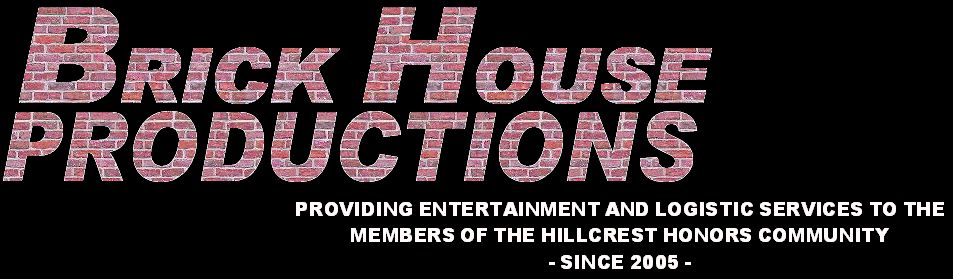

| 
About Brick House Productions
Brick House Productions is what its name implies: a production "company" for the Brick House: Hillcrest Hall at Virginia Tech. Consisting of a varied group of dedicated individuals, Brick House Productions has been around for a long time, just never with any sort of formal name. So we're giving it one. And that is really all it is. Scroll down to see what kinds of services we offer. About the Name
My building, Hillcrest, is the only dorm... er... "residence hall" at Virginia Tech made of brick. There are a few others, but technically they are called barracks. One of the perpetually talked-about but never actually made t-shirt ideas floating around the building tries to use a popular song from 1977 to comedic effect: "Brick House" by the Commodores. Hence, Hillcrest Hall is known colloquilly as "The Brick House." So it seemed only fitting that a group doing stuff around the building should work under the name Brick House Productions. Our Services
Contact Us
Are you planning something? Don't worry, we won't reveal your dastardly plans for global domination. We were more wondering about an event needing support services! Oh, but your orbiting space laser plan will never work, by the way. Anyway, if you'd like to get in touch with Brick House Productions regarding help, you can either stop by our Blacksburg offices or email us. Note:
The actual, physical existence of Brick House Productions is highly suspect. It sort of exists, but only to give a name to all of the stuff that Peter and a whole slew of motivated people around the community do around the building (and to make them feel better). If you actually do contact us, be aware that there is a good chance that we will turn down any request you may have. We will read it, but remember that this page is more of a joke.
| ||||||
{kind=link}
{kind=link}
{kind=link}
{kind=link}
{kind=link}
{kind=link}